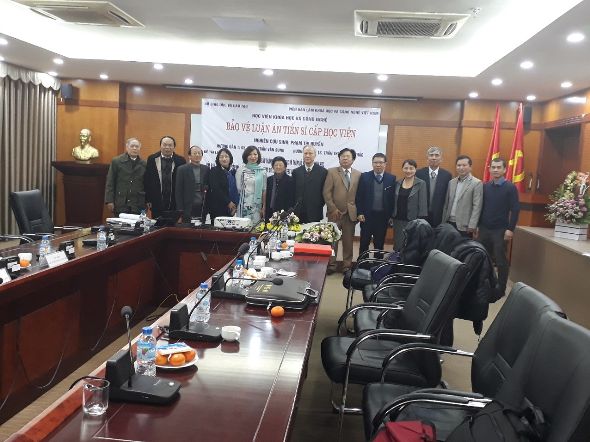

Nghiên cứu sinh Phạm Thị Huyền – Phó Hiệu trưởng bảo vệ thành công Luận án Tiến sĩ

Lần cập nhật cuối lúc Thứ tư, 03 Tháng 1 2018 09:58 Viết bởi Administrator Thứ sáu, 29 Tháng 12 2017 09:43
Ngày 27/12/2017, tại Hà Nội, Nghiên cứu sinh Phạm Thị Huyền – Phó Hiệu trưởng Trường THPT chuyên Nguyễn Bỉnh Khiêm đã bảo vệ thành công Luận án Tiến sĩ với tên đề tài: "Nghiên cứu thành phần hoá học và thăm dò hoạt tính sinh học của ba loài thực vật ngập mặn vùng ven biển Việt Nam: Cỏ chông (S. Littoreus (Burm. F.) Merr.), Hếp (S. Taccada (Gaertn.) Roxb.) và Cóc đỏ (L. Littorea (Jack.) Voigt.)"

Chuyên ngành: Hóa hữu cơ
Mã số: 62440114
Họ tên nghiên cứu sinh: Phạm Thị Huyền
Khóa đào tạo: 2013-2016 (tập trung)
Người hướng dẫn khoa học: GS.TSKH. Trần Văn Sung
TS. Trần Thị Phương Thảo
Cơ sở đào tạo: Học viện Khoa học và Công Nghệ- Viện Hàn Lâm Khoa học và Công nghệ Việt Nam.
I. TÓM TẮT NỘI DUNG LUẬN ÁN
Cho đến nay, trên thế giới chưa có công trình nghiên cứu nào về thành phần hóa học cũng như hoạt tính sinh học của hai loài Cỏ chông (Spinifex littoreus), Cóc đỏ (Lumnitzera littorea) và có rất ít công trình nghiên cứu về loài Hếp (Scaevola taccada), đặc biệt là cả ba loài thực vật này đều chưa được nghiên cứu ở Việt Nam. Mục tiêu của luận án là khảo sát thành phần hóa học của ba loài cây Cỏ chông (Spinifex littoreus), Hếp (Scaevola taccada) và Cóc đỏ (Lumnitzera littorea) nhằm tìm kiếm các hoạt chất sinh học thú vị trên cơ sở đánh giá hoạt tính gây độc tế bào, chống oxy hóa và kháng vi sinh vật của các cao chiết và hợp chất phân lập được. Luận án đã sử dụng các phương pháp sắc ký để cô lập các hợp chất, sử dụng các phương pháp phổ hiện đại như: khối phổ (ESI-MS, HR-ESI-MS), phổ cộng hưởng từ hạt nhân một chiều (1D) và hai chiều (2D-NMR)… để xác định cấu trúc hóa học của các hợp chất phân lập, sử dụng phương pháp SBR trong thử nghiệm hoạt tính gây độc tế bào trên các dòng MCF-7 (ung thư vú), HepG2 (ung thư gan), KB (ung thư biểu mô), Lu (ung thư phổi), phương pháp DPPH trong thử nghiệm hoạt tính chống oxy hóa và phương pháp giếng nồng độ trong môi trường lỏng để đánh giá mức độ kháng khuẩn của các mẫu thử.
II. NHỮNG KẾT QUẢ MỚI CỦA LUẬN ÁN
Luận án đã đóng góp những hiểu biết mới về thành phần hóa học và hoạt tính sinh học của ba loài: Hếp, Cóc đỏ và Cỏ chông. Tổng cộng 28 hợp chất đã được phân lập, trong đó có 2 hợp chất lần đầu tiên được phân lập từ thiên nhiên. Cấu trúc của các chất được xác định bằng việc phân tích kết hợp các phổ IR, MS, HR-ESI-MS, NMR một chiều, hai chiều và so sánh với tài liệu tham khảo. Lần đầu tiên ở Việt Nam và trên thế giới thành phần hóa học và hoạt tính sinh học của loài Cóc đỏ (Lumnitzera littorea) và loài Cỏ chông (Spinifex littoreus) được nghiên cứu. Riêng loài Hếp (Scaevola taccada) lần đầu tiên được nghiên cứu ở Việt Nam.
1. Từ loài Hếp đã phân lập được 9 hợp chất trong đó có 7 hợp chất lần đầu tiên được phân lập từ loài cây này.
2. Từ loài Cóc đỏ đã phân lập được 12 hợp chất trong đó có một hợp chất là 1-O-acetyl-D-mannitol, trước đây chỉ được tìm thấy trong xạ khuẩn, đây là lần đầu tiên được phân lập từ thực vật. Thành phần chính của dịch chiết methanol cành Cóc đỏ là đường D-mannitol với hàm lượng rất cao (15.92 %), đây là nguồn nguyên liệu tự nhiên để sản xuất đường thay thế cho bệnh nhân tiểu đường và thuốc trị bệnh tăng nhãn áp.
3. Từ loài Cỏ chông đã phân lập được 11 chất trong đó có 2 chất lần đầu tiên được phân lập từ thiên nhiên.
4. Luận án đã thử nghiệm hoạt tính gây độc tế bào ung thư (HepG2, MCF7, KB, Lu) của 7 loại cao chiết và 3 hợp chất từ loài Cỏ chông và Hếp. Kết quả cho thấy các cao chiết và các hợp chất này đều có hoạt tính yếu hoặc không có hoạt tính.
5. Luận án đã thử nghiệm hoạt tính chống oxy hóa và kháng vi sinh vật kiểm định của 12 loại cao chiết từ loài Cỏ chông và Cóc đỏ cùng với 4 hợp chất từ loài Cỏ chông. Kết quả cho thấy các cao chiết và các hợp chất này đều có hoạt tính yếu hoặc không có hoạt tính.
III. CÁC ỨNG DỤNG/ KHẢ NĂNG ỨNG DỤNG TRONG THỰC TIỄN HAY NHỮNG VẤN ĐỀ CÒN BỎ NGỎ CẦN TIẾP TỤC NGHIÊN CỨU
- Kết quả nghiên cứu cung cấp các kiến thức mới về thành phần hóa học từ 3 loài Cỏ chông, Cóc đỏ, Hếp, từ đó giúp cho việc định hướng sử dụng hợp lý các loài này.
- Các đề xuất nghiên cứu trong tương lai:
+ Luận án chỉ thử nghiệm được hoạt tính sinh học của một số ít hợp chất phân lập được, do vậy cần tiếp tục nghiên cứu hoạt tính sinh học của các chất phân lập được từ 3 loài trên.
+ Luận án chỉ khảo sát sự có mặt của alkaloid trong cặn chiết methanol của loài Hếp nhưng chưa phân lập được alkaloid. Vì vậy cần tiếp tục nghiên cứu thành phần hóa học của cặn chiết alkaloid và dịch chiết nước từ cặn methanol của lá cây Hếp.
THESIS INFORMATION
Title: "Study on the chemical constituents and bioactivity investigation of three mangrove species in the coastal areas of Vietnam: S. littoreus (Burm. f.) Merr., S. taccada (Gaertn.) Roxb. and L. littorea (Jack.) Voigt.".
Speciality: Organic chemistry
Code: 62440114
PhD student: Phạm Thị Huyền
Academic year: 2013-2016
Supervisor: Prof. Dr. Habil. Trần Văn Sung
Prof. Dr. Trần Thị Phương Thảo
The name of postgraduate training institution: Viet Nam Academy of Science and Technology.
I. ABSTRACT
Up to now, there are no studies about the chemical constituents as well as biological activity of Spinifex littoreus, Lummnitzera littorea, and just few reports about the chemical constituents of Scaevola taccada. All of the above mangrove species have not yet been studied in Vietnam. The aims of thesis are: to investigate the chemical constituents of Spinifex littoreus, Lummnitzera littorea and Scaevola taccada; to evaluate the cytotoxicity, anti-oxidant and anti-microbial activity of the extracts and isolated compounds. The methods to be used in the thesis: column chromatography for the isolation of the pure compures, ESI-MS, HR-ESI-MS, 1D- and 2D-NMR spectroscopy for the structural elucidation, SBR bioassay for the cytotoxic activity test on MCF-7 (breast cancer), HepG2 (liver cancer), KB (Human epidermic carcinoma) and Lu (human lung cancer) cancer cell line, DPPH assay for anti-oxidant activity, and change in the concentration of 96-well plates assay for microbial activity.
II. THE NEW FINDINGS OF THE THESIS
This thesis contributed the new results about chemical constituents and biological activities of Spinifex littoreus, Lumnitzera littorea and Scaevola taccada. 28 compounds have been isolated, two of which have been isolated for the first time from nature. The structral elucidation of the pure compounds were determined by analysis of the IR, ESI-MS, HR-ESI-MS, 1D- and 2D-NMR spectra and comparison with the data in literatures.
1. Nine compounds have been isolated from S. taccada, of which seven compounds have been isolated for the first time from this plant.
2. Twelve compounds have been isolated from L. littorea, of which compound 1-O-acetyl-D-mannitol was first time found in plants. D-Mannintol was found to be the main ingredient of the methanol extract with the content of 15.92%, suggesting a natural source to produce sugar substitutes for diabetic patients and glaucoma medications.
3. Eleven compounds have been isolated from S. littoreus of which two compounds have been isolated for the first time from nature.
4. The cytotoxicity evaluation of 7 extracts and 3 compounds isolated from S. littoreus and S. taccada on HepG2, MCF7, KB, Lu cancer cell lines have been carried out. The results showed negative or weak activity.
5. The anti-oxidant and anti-microbial activity of 12 extracts and 4 compounds isolated from S. littoreus and L. littorea have been evaluated. The results showed negative or weak activity.
III. PRACTICAL APPLICABILITY AND FURTHER RESEARCH DIRECTIONS
- The chemical constituents of S. littoreus, L. littorea and S. taccada reporting in this thesis may contribute for the utilization and exploitation of these species.
- Future research proposals: Continuation the study on chemical constituents and biological activities of other extracts and pure compounds of these species.
- 02/12/2018 00:00 - Kế hoạch tổ chức cuộc thi đường lên đỉnh Olympia 2…
- 12/09/2018 10:07 - Trường THPT chuyên Nguyễn Bỉnh Khiêm khai giảng nă…
- 24/08/2018 08:31 - Chỉ thị về nhiệm vụ chủ yếu năm học 2018 - 2019 củ…
- 08/06/2018 08:48 - Học với thiên nhiên hiện thực hóa các bài giảng lý…
- 21/02/2018 10:15 - Kế hoạch và Nội quy Hội trại Khát vọng Nguyễn Bỉnh…
- 17/12/2017 20:58 - Trường THPT chuyên Nguyễn Bỉnh Khiêm và Trường Đại…
- 02/12/2017 08:21 - KỶ NIỆM 35 NĂM NGÀY NHÀ GIÁO VIỆT NAM 20-11 THPT C…
- 24/11/2017 07:41 - Phát động tham gia hưởng ứng Cuộc thi Những tấm gư…
- 26/10/2017 00:00 - Đại hội Đại biểu Đoàn TNCS trường THPT Chuyên Nguy…
- 23/10/2017 00:00 - Sinh hoạt tuyên truyền giáo dục pháp luật về trật …